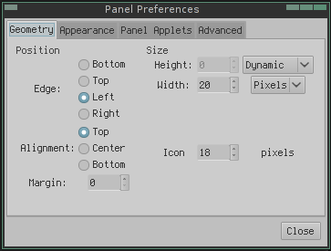

lang fr|gb

livarp panels
livarp includes tint2 used in openbox session & lxpanel used in pekwm session.
lxpanel
lxpanel is used in the livarp pekwm session as tasklist. bonus: lxpanel has a complete configuration menu in graphique mode launched from right-clic on menu. you can use it in others session but not in tiling session (dwm, ratpoison, spectrwm, wmfs, awesome).
the lxpanel configuration menu is easy to use:

tint2
tint2 is a multi-function panel that has more success. It is light, fast and highly configurable. it is independent and fits into almost all window managers. This is the default crunchbanglinux panel on openbox and livarp use it on openbox as tasklist.
configuration
tint2 configuration can be done through GUI tint2conf, but I do not recommend it. The software works well but its organization is confusing and many users have deleted their preferred configurations with tint2conf. so let's configure tint2 the "old way", by editing its configuration file.
Note that you can run multiple instances of tint2 with their respective configurations.
for example, we take the crunchbanglinux configuration file for tint2 (more options used to livarp):

with tint2, you can configure everything: the appearance, position, widgets, internal layout panel, the mouse actions on the panel .... so here we go: Here are the configuration file corresponding to the image above:
#--------------------------------------------- # TINT2 CONFIG FILE #--------------------------------------------- # For more information about tint2, see: # http://code.google.com/p/tint2/wiki/Welcome # # For more config file examples, see: # http://crunchbanglinux.org/forums/topic/3232/my-tint2-config/ # Background definitions # ID 1 rounded = 0 border_width = 0 background_color = #ffffff 5 border_color = #828282 0 # ID 2 - task active rounded = 1 border_width = 0 background_color = #d8d8d8 30 border_color = #d8d8d8 30 # ID 3 - task rounded = 1 border_width = 0 background_color = #000000 0 border_color = #000000 0 # ID 4 rounded = 1 border_width = 1 background_color = #888888 20 border_color = #ED2323 60 # ID 5 - taskbar rounded = 0 border_width = 1 background_color = #000000 0 border_color = #000000 0 # ID 6 - active taskbar rounded = 0 border_width = 1 background_color = #d8d8d8 8 border_color = #d8d8d8 0 # ID 7 - tooltip rounded = 3 border_width = 0 background_color = #222222 90 border_color = #222222 90 # ID 8 rounded = 1 border_width = 1 background_color = #888888 20 border_color = #888888 20 # Panel panel_monitor = all panel_position = top center horizontal panel_items = LTSC panel_size = 100% 30 panel_margin = 0 -1 panel_padding = 0 0 panel_dock = 0 wm_menu = 1 panel_layer = bottom panel_background_id = 1 # Panel Autohide autohide = 0 autohide_show_timeout = 0.3 autohide_hide_timeout = 1.5 autohide_height = 6 strut_policy = follow_size # Taskbar taskbar_mode = multi_desktop taskbar_padding = 6 0 6 taskbar_background_id = 5 taskbar_active_background_id = 6 taskbar_name = 1 taskbar_name_background_id = 0 taskbar_name_active_background_id = 0 taskbar_name_font = Liberation Sans 9 taskbar_name_font_color = #828282 100 taskbar_name_active_font_color = #828282 100 # Tasks urgent_nb_of_blink = 20 task_icon = 1 task_text = 0 task_centered = 1 task_maximum_size = 40 40 task_padding = 2 2 task_background_id = 3 task_active_background_id = 2 task_urgent_background_id = 4 task_iconified_background_id = 3 # Task Icons task_icon_asb = 80 0 0 task_active_icon_asb = 100 0 0 task_urgent_icon_asb = 100 0 0 task_iconified_icon_asb = 80 0 0 # Fonts task_font = Liberation Sans 06_55 6 task_font_color = #828282 60 task_active_font_color = #828282 100 task_urgent_font_color = #FFFFFF 100 task_iconified_font_color = #d8d8d8 60 font_shadow = 0 # Launcher launcher_padding = 8 4 4 launcher_background_id = 0 launcher_icon_size = 24 # Specify icon theme names with launcher_icon_theme. # if you have an XSETTINGS manager running (like xfsettingsd), tint2 will follow your current theme. launcher_icon_theme = gnome-colors-statler # Each launcher_item_app must be a full path to a .desktop file launcher_item_app = /usr/share/applications/terminator.desktop launcher_item_app = /usr/share/applications/Thunar.desktop launcher_item_app = /usr/share/applications/geany.desktop launcher_item_app = /usr/share/applications/iceweasel.desktop # System Tray systray = 1 systray_padding = 4 2 3 systray_sort = ascending systray_background_id = 0 systray_icon_size = 24 systray_icon_asb = 100 0 0 # Clock time1_format = %H:%M:%S time1_font = Liberation Mono 10 #time2_format = %A %d %B #time2_font = Liberation Sans 6 clock_font_color = #828282 100 clock_padding = 12 4 clock_background_id = 0 clock_lclick_command = gsimplecal clock_rclick_command = gsimplecal # Tooltips tooltip = 1 tooltip_padding = 2 2 tooltip_show_timeout = 0.0 tooltip_hide_timeout = 0.0 tooltip_background_id = 7 tooltip_font_color = #d8d8d8 100 tooltip_font = Liberation Sans normal 9.0 # Mouse mouse_middle = none mouse_right = toggle mouse_scroll_up = toggle mouse_scroll_down = iconify # Battery battery = 1 battery_low_status = 20 battery_low_cmd = notify-send "battery low" battery_hide = 96 bat1_font = Liberation Sans 10 bat2_font = Liberation Sans 8 battery_font_color = #FFFFFF 100 battery_padding = 2 0 battery_background_id = 0 # End of config
now detail this file: it is organized by sections each controlling a part of tint2:
- # backgrounds definitions: tint2 automatically identifies each background with a number (1, 2, ...). then you can applied background on objects (panel, taskbar, task, clock, systray).
- rounded: number_of_pixels : how rounded the borders are
- background_color: color opacity: opacity as percent. 0 to get background transparency
- border_color: color opacity of the border
- # panel: position & disposition
- panel_monitor: monitor (all, 1, 2, ...) Which monitor tint2 draws the panel on .
- panel_position: vertical_position horizontal_position orientation
- panel_items: panel applets order, 'L'launcher - 'T'askbar - 'S'systray - 'B'batterie - 'C'clock
- panel_size: width height: pixel or percent
- panel_margin: horizontal_margin vertical_margin: outside margin
- panel_padding: horizontal_margin vertical_margin: inside padding
- panel_dock: tint2 is a dock? (0 no, 1 yes)
- wm_menu: right-click display wm-menu if there is one (0 no, 1 yes)
- panel_layer: panel type 'bottom' - 'normal' - 'top'
- panel_background_id: background ID applied to panel
- ....
as you can see, the options are easily understable (as it's in english .. french'doc is more complete :) )